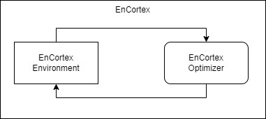

EnCortex Developer Basics#
Each of the below pages cover various topics in the EnCortex framework.

Components#
On a high level, a scenario consists of two main components: Environment and Optimizer. An Environment operates on an individual Decision Unit and an optimizer is tasked to sequentially optimize for an environment.
Environment#
An environment is created by extending the EnCortex environment class and using the decorator EnCortexEnv.register, register your environment so that it is accessible throughout the framework as an additional supported environment. Based on how EnCortex is structured, we implement an environment by extending the EnCortexEnv class and build an MILP Environment. The following points cover what methods are important to be overridden:
Now, you need to manually implement the following methods to construct the whole environment.
get_objective_function - Objective function is a function of state and variables. State is a dictionary containing data related to each entity between a certain time referenced by their ID.
_check_decision_unit_constraints - This function parses the decision unit object and checks if the decision unit is supported by the environment. This is an important step before registering the environment.
_step - This function dictates things that are necessary to execute an action, calculating rewards, penalties, etc.
For a much more detailed example, refer to Battery Arbitrage MILP Environment and refer to the comments for an detailed explanation.
Depending on the algorithm, multiple environments must be implemented in order to fit to the algorithms offered within EnCortex. The RL Environment provides an example why it is necessary to implement a different algorithm.
RL Environment#
In this case, we take advantage of the fact that RL can be built on top of an MILP environment. To understand this better, let’s look at the objective function of the above scenario.
Here, if every charge decision is denoted by $C$ and every discharge decision is denoted by $D$, assuming we require $V_{charge}$ energy upon charging and supply $V_{discharging}$ upon discharging,
To accommodate RL, we consider this as a discrete choice problem where 0 indicates charge, 1 indicates idle and 2 indicates discharge. Hence, the transformation from RL to MILP in this scenario is:
if rl_action == 0:
C, D = 1,0 #charge
elif rl_action == 1:
C, D = 0, 0 #idle
elif rl_action == 2:
C, D = 0, 1 #discharge
When these constraints are applied, the gym.space based action is transformed to MILP based constraints(see the transform_variable method in the BatteryAction class).
Decision Unit#
A decision unit is a directed graph where each entity is a node on the graph and the contract between the nodes denotes the power flow and dictates the power balance equation. The decision unit object has many utility methods available to operate on the decision as a whole while also giving individual access to each of these components. The next few subsections cover this in-detail.
Entity#
An entity in the decision unit graph is a power component i.e it can be a Source(energy generating unit), a Battery(energy consumer/generating), a Consumer(energy consuming) or a Market(energy bidding) type of component. Each entity has a variable volume that denotes how much volume/energy flows at any given time until the next timestep. In EnCortex, the entity comprises of broadly 4 attributes: 1) Config, 2) Action, 3) Data and 4) Schedule. Depending upon the type of entity, there can be additional attributes present which are covered in their individual documentation.
Config#
A dictionary containing the configuration of the entity. This attribute is used to maintain and access the state of the entity. This is used to save the state of the decision unit and load it dynamically whenever needed.
Action#
An action for an entity describes the behaviour of the entity at each timestep upon taking certain actions. These actions also account for entity level constraints and have a penalty function associated with each of the actions to penalize wrong/unsafe actions when training neural networks.
Contract#
Contract now defines the terms of a contract between a contractor and a contractee. The default direction of volume is from a contractor to contractee, although it can be made biirectional using the argument is_bidirectional argument when initializing a contract. A contract can levy contractual-constraints on the variables. By default, the power balance equation is always maintained within EnCortex internally.
Schedule#
A schedule is represented using the Cron grammar to represent a timely schedule.
Optimizer#
The optimizer sequentially solves for the required variables given the environment. Note that the implementation structure for an MILP environment and an RL environment is significantly different because of the different structures.
1import a
2import b
3
4def f(x):
5 return x